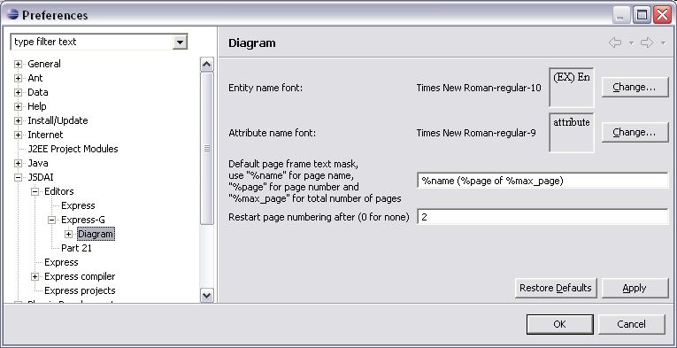
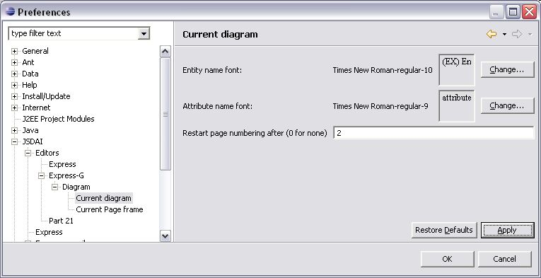
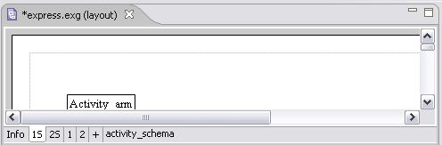

Restart page numbering
There is a possibility to restart page numbering after the selected page for a particular diagram:
Open an applicable schema diagram in the
Editor
panel.
Use the
Window --> Preferences
drop-down menu to open
Preferences
window.
Select an applicable node in the tree on the left:
JSDAI --> Editors --> Express-G --> Diagram
- to set numbering options for the diagram to be created in the future (see
Figure 1
).
Or
JSDAI --> Editors --> Express-G --> Diagram --> Current diagram
- to change page numbering in the current diagram (see
Figure 2
).
Enter the page number after which you want to restart numbering into the
Restart page numbering after (0 for none)
field.
Click the
Apply
or
OK
button to apply changes. The numbering of pages will be restarted after the entered number (see
Figure 3
).

Figure 1.
Preferences window, Diagram panel

Figure 2.
Preferences window, Current diagram panel

Figure 3.
The numbering is restarted after the second page
To top
Copyright © 2005-2008
LKSoftWare GmbH
. All Rights Reserved.
JSDAI is a registered trade mark of LKSoftWare GmbH.